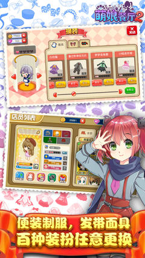
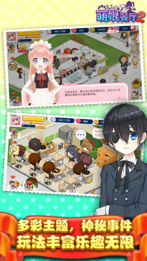

萌娘餐厅2
扫描二维码下载
或用手机浏览器输入这个网址: https://cat-studio.net/qrcode.html
1.35.05 (Build 13505) - 113.05 MB
更新于: 2023-09-19 10:00
推荐应用
更新日志
1. 中秋活动预更新 2. 增加新菜品“冰皮玉兔” 3. 增加新主题“午后时光” 4. 修复积累bug
应用描述
店长SAMA，我们是快乐的大家族哦~~ -------------------------------------------------------------- 萌娘餐厅是一款二次元风格的模拟经营及育成手游，融合了大量时下流行的动漫元素。游戏中你将作为店长，在萌萌的小助理陪伴下经营你的萌娘餐厅，从烹饪料理、研发、布置小店，到雇佣员工、宣传、处理外卖订单、举行派对，所有事务均由你亲自安排，还可以和身边的朋友们进行丰富的社交活动，体验梦幻而又真实的模拟经营，共同书写妙趣横生的餐厅物语。
应用截图
- 
- 